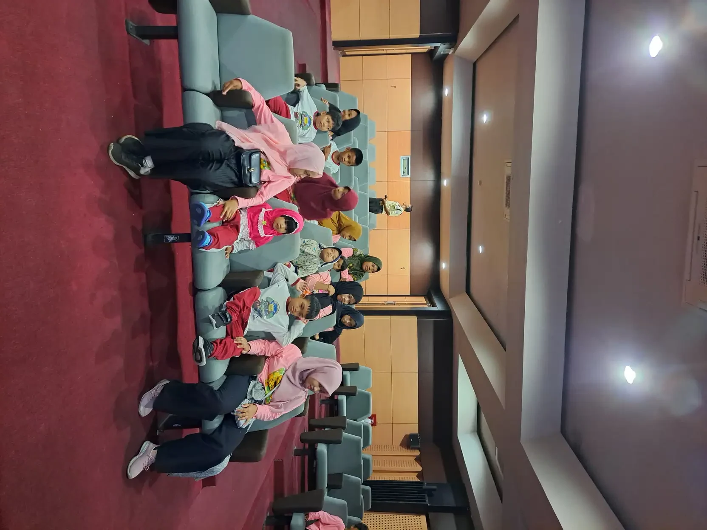
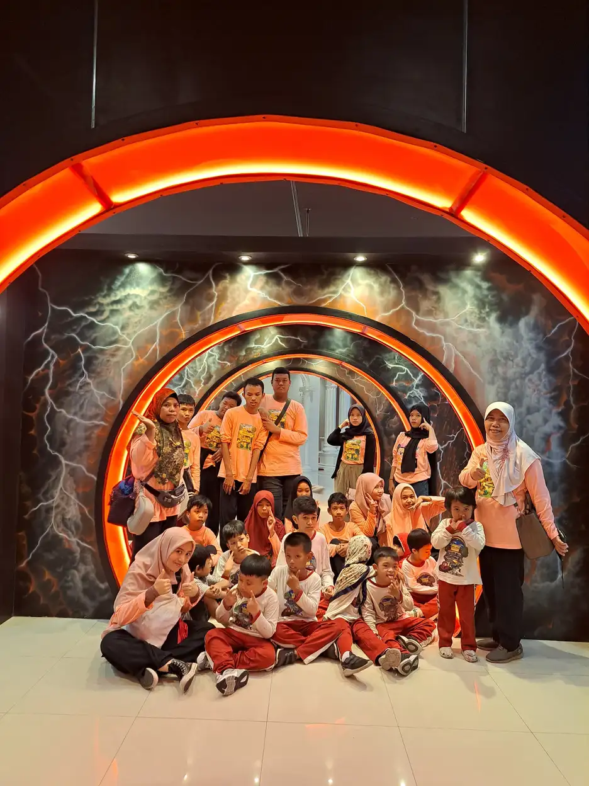

Status tinjauan medis: Artikel ini belum ditinjau oleh dokter berlisensi. Disusun sebagai informasi editorial umum, bukan diagnosis, resep, panduan tindakan, atau janji kesembuhan. Bila anak memiliki keluhan, konsultasikan kepada tenaga kesehatan yang berwenang.
Daftar Isi
- Apa itu spina bifida pada anak?
- Apa perbedaan jenis spina bifida?
- Mengapa kemampuan setiap anak bisa berbeda?
- Bagaimana dokter memastikan kondisi ini?
- Siapa yang menyusun rencana perawatan?
- Bagaimana mendukung kandung kemih dan buang air besar?
- Bagaimana menjaga mobilitas dan kesehatan kulit?
- Tanda apa yang membutuhkan pertolongan segera?
- Apa peran folat tanpa menyalahkan orang tua?
- Bagaimana sekolah membangun dukungan yang inklusif?
- Apa yang dapat keluarga siapkan untuk konsultasi?
- Pertanyaan umum
Apa itu spina bifida pada anak?
Spina bifida pada anak adalah kondisi bawaan yang berkaitan dengan pembentukan tabung saraf dan tulang belakang pada awal kehamilan. Celah yang terbentuk dapat melibatkan jaringan saraf, tetapi pengaruhnya tidak sama pada setiap anak. Sebagian tidak mengalami keluhan, sementara sebagian lain membutuhkan perawatan medis dan dukungan aktivitas sehari-hari.
Tabung saraf merupakan struktur awal yang kemudian berkembang menjadi otak dan sumsum tulang belakang. Ketika pembentukan atau penutupannya tidak berlangsung sebagaimana mestinya, bagian tulang belakang yang seharusnya melindungi jaringan saraf dapat memiliki celah. Karena itu, istilah ini bukan sekadar bentuk punggung yang terlihat berbeda, melainkan mencakup kondisi dengan keterlibatan saraf yang bervariasi.
Spina bifida bukan penyakit menular dan bukan akibat anak salah duduk, kurang berlatih, atau tidak mau bergerak. Keluarga juga tidak dapat memastikan jenisnya dengan membandingkan foto punggung dari internet. Informasi umum membantu menyiapkan pertanyaan, sedangkan penetapan kondisi, pemeriksaan tambahan, dan pilihan penanganan merupakan kewenangan dokter.
Dalam pembahasan disabilitas fisik, penting membedakan diagnosis dengan kebutuhan nyata. Nama kondisi tidak menggambarkan seluruh kemampuan, minat, kecerdasan, atau masa depan seorang anak. Mulailah dengan mengenali apa yang anak sukai, kegiatan yang ingin ia ikuti, dan bantuan yang membuatnya lebih nyaman.
Apa perbedaan jenis spina bifida?
Jenis spina bifida dibedakan menurut jaringan yang terlibat dan apakah kelainannya tertutup kulit atau terbuka. Istilah yang sering ditemukan adalah okulta, meningokel, dan mielomeningokel. Ada pula kelompok kelainan tabung saraf tertutup yang lebih beragam. Kategori membantu dokter menjelaskan kondisi, tetapi tidak menggantikan penilaian fungsi saraf masing-masing anak.
| Jenis atau kelompok | Gambaran umum | Fokus pembicaraan |
|---|---|---|
| Spina bifida okulta | Celah pada tulang belakang tertutup kulit; sering tidak menimbulkan gejala. | Apakah temuan berkaitan dengan keluhan atau cukup dipantau sesuai penilaian dokter? |
| Meningokel | Selaput pelindung dan cairan menonjol membentuk kantung; sumsum tulang belakang tidak berada di dalam kantung tersebut. | Bagaimana keadaan saraf dan apakah dibutuhkan tindakan penutupan? |
| Mielomeningokel | Kantung atau kelainan terbuka melibatkan bagian sumsum tulang belakang dan saraf. | Bagaimana rencana bedah, pemantauan otak, kandung kemih, usus, dan mobilitas? |
| Kelainan tabung saraf tertutup lainnya | Kelainan tertutup kulit dapat melibatkan lemak, tulang, atau selaput pelindung saraf. | Adakah perubahan kekuatan, sensasi, atau fungsi berkemih yang memerlukan evaluasi? |
Pembagian istilah antarhalaman kesehatan dapat berbeda karena ada sumber yang mengelompokkan berdasarkan bentuk terbuka dan tertutup, sedangkan lainnya menyebut beberapa jenis tersendiri. Jangan menyimpulkan bahwa semua bentuk tertutup pasti ringan. Kelompok ini tidak identik dengan okulta sederhana, dan sebagian membutuhkan pemantauan khusus.
Tabel tersebut bukan alat untuk mengelompokkan anak secara mandiri. Bila laporan pemeriksaan memakai istilah yang belum dipahami, mintalah dokter menjelaskan jaringan mana yang terlibat serta konsekuensinya bagi perawatan. Penjelasan yang jelas lebih bermanfaat daripada mencari label yang dianggap paling ringan atau paling berat.
Mengapa kemampuan setiap anak bisa berbeda?
Dampak spina bifida dipengaruhi jenis kelainan, lokasi pada tulang belakang, dan keterlibatan saraf maupun kondisi penyerta. Karena itu, anak dengan diagnosis serupa dapat memiliki kebutuhan yang sangat berbeda. Kemampuan berjalan, mengendalikan buang air, merasakan sentuhan, atau mengatur tugas sekolah perlu dinilai satu per satu, bukan diperkirakan dari penampilan.
Sebagian anak bergerak tanpa alat bantu. Anak lain memakai penyangga, alat bantu berjalan, atau kursi roda. Kemampuan juga dapat berbeda menurut situasi: seorang anak mungkin berjalan di rumah tetapi memilih kursi roda untuk perjalanan yang jauh. Pilihan tersebut bisa menjadi strategi menghemat tenaga dan menjaga partisipasi, bukan kemunduran yang harus dipermalukan.
Pada sebagian bentuk spina bifida dapat ditemukan hidrosefalus, yaitu penumpukan cairan di dalam otak, atau perubahan lain yang membutuhkan penilaian spesialis. Tidak semua anak mengalaminya. Demikian juga kesulitan belajar tidak boleh dianggap pasti terjadi. Amati kebutuhan perhatian, ingatan, pengorganisasian tugas, dan pemahaman instruksi berdasarkan keseharian anak.
Pendekatan perencanaan berpusat pada individu membantu keluarga memisahkan kebutuhan kesehatan dari pilihan hidup anak. Tanyakan kegiatan yang ingin ia lakukan dan hambatan yang perlu disingkirkan. Hindari membandingkan perkembangannya dengan anak lain yang ditemukan di media sosial karena riwayat medis dan lingkungan mereka dapat berbeda.
Sumber: NHS: gejala, variasi dampak, dan dukungan.

Bagaimana dokter memastikan kondisi ini?
Dokter dapat menemukan spina bifida ketika kehamilan atau setelah bayi lahir, bergantung pada jenisnya dan hasil pemeriksaan. Pemeriksaan dapat melibatkan pencitraan serta penilaian lain sesuai kebutuhan. Hasil skrining yang menunjukkan kemungkinan kelainan belum selalu merupakan diagnosis pasti; dokter perlu menjelaskan arti temuan, keterbatasan pemeriksaan, dan langkah berikutnya.
Selama kehamilan, pemeriksaan ultrasonografi dapat memperlihatkan kelainan tertentu. Pemeriksaan darah ibu atau pemeriksaan lanjutan mungkin dipertimbangkan dalam situasi yang sesuai. Setelah lahir, pemeriksaan fisik dan pencitraan membantu menilai tulang belakang serta jaringan saraf. Sebagian bentuk okulta baru diketahui ketika anak menjalani pemeriksaan karena alasan lain.
Benjolan, lekukan, atau area berambut di punggung tidak boleh langsung dianggap bukti diagnosis. Sebaliknya, tidak adanya kantung yang terlihat juga tidak menjamin semua fungsi saraf normal. Bila ada temuan yang mengkhawatirkan, konsultasikan kepada dokter anak. Jangan memijat, menekan, atau mencoba mengatasi benjolan sendiri berdasarkan petunjuk dari internet.
Jika keluarga baru menerima hasil pemeriksaan, bawa salinan laporan dan catat pertanyaan dengan bahasa sederhana. Bacaan tentang menata langkah setelah menerima diagnosis anak dapat membantu menyiapkan percakapan. Namun, diagnosis spina bifida tetap memerlukan penilaian medis, bukan kesimpulan dari artikel pendidikan atau jawaban komunitas daring.
Sumber: CDC: skrining dan diagnosis.
Siapa yang menyusun rencana perawatan?
Perawatan spina bifida dapat melibatkan dokter anak, dokter bedah saraf, dokter urologi, dokter ortopedi, tenaga rehabilitasi, perawat, serta profesional lain sesuai kebutuhan. Keluarga dan anak perlu dilibatkan dalam penentuan tujuan. Tidak semua anak memerlukan layanan yang sama, dan rencana perawatan harus disesuaikan dengan temuan serta prioritas kesehariannya.
Dokter anak membantu mengoordinasikan kesehatan umum. Dokter bedah saraf menilai masalah otak dan tulang belakang. Dokter urologi memperhatikan kandung kemih serta ginjal, sedangkan dokter ortopedi menilai tulang dan sendi. Dokter rehabilitasi, fisioterapis, dan terapis okupasi dapat membantu menyusun dukungan fungsi serta penggunaan alat bantu yang sesuai.
Operasi pada jenis tertentu bertujuan menutup kelainan atau menangani komplikasi. Tindakan ini bukan janji mengembalikan semua fungsi saraf yang sudah terganggu. Operasi selama kehamilan pun merupakan keputusan spesialis dengan pertimbangan manfaat dan risiko bagi ibu serta janin, bukan pilihan yang wajib atau cocok untuk setiap keluarga.
Mintalah penjelasan tertulis tentang tujuan tindakan, alternatif, tanda bahaya, dan jadwal kontrol. Materi terapi okupasi serta terapi fisik untuk anak berkebutuhan khusus dapat membantu memahami istilah, tetapi tidak menentukan latihan untuk anak tertentu. Artikel ini tidak menyatakan bahwa YUKA menyediakan diagnosis, bedah, atau layanan klinis spina bifida.
Sumber: CDC: koordinasi tenaga kesehatan.
Bagaimana mendukung kandung kemih dan buang air besar?
Gangguan saraf pada spina bifida dapat memengaruhi penyimpanan dan pengosongan urine serta pengendalian buang air besar. Dukungan tidak cukup dengan meminta anak lebih rajin ke toilet. Tim medis perlu menyusun rencana individual yang menjaga kesehatan kandung kemih, ginjal, kenyamanan usus, dan martabat anak dalam kehidupan sehari-hari.
Anak dapat mengalami kebocoran urine atau kesulitan mengosongkan kandung kemih. Kondisi yang tampak tenang dari luar tidak selalu menunjukkan keadaan saluran kemih aman. Ikuti pemeriksaan dan pemantauan ginjal yang dianjurkan dokter. Bila penggunaan kateter direkomendasikan, teknik, alat, dan jadwalnya harus diajarkan langsung oleh tenaga kesehatan, bukan dipelajari hanya dari artikel.
Untuk buang air besar, sebagian anak memerlukan rutinitas khusus karena konstipasi, kebocoran feses, atau berkurangnya sensasi. Rencana dapat mencakup pengaturan kebiasaan, makanan, dan tindakan lain sesuai penilaian profesional. Jangan menambah obat pencahar, melakukan tindakan melalui anus, atau mengubah rencana medis tanpa arahan yang memahami kondisi anak.
Di sekolah, sediakan waktu, tempat yang privat, pakaian pengganti, dan orang yang berwenang membantu sesuai kesepakatan. Hindari membahas kebocoran di depan teman atau menjadikannya hukuman. Dalam kerja sama orang tua dan sekolah, informasi kesehatan dibagikan seperlunya kepada petugas yang relevan, bukan kepada seluruh kelompok percakapan kelas.
Sumber: NINDS: program kandung kemih dan usus.

Bagaimana menjaga mobilitas dan kesehatan kulit?
Tujuan dukungan mobilitas adalah memungkinkan anak bergerak dan mengikuti kegiatan dengan aman, nyaman, serta sesuai pilihannya. Alat bantu dan latihan dipilih berdasarkan penilaian profesional, bukan target agar semua anak berjalan tanpa bantuan. Pemeriksaan kulit juga penting ketika sensasi berkurang karena luka atau tekanan mungkin tidak langsung terasa oleh anak.
Perhatikan akses masuk rumah, ruang bergerak di kelas, tempat duduk, dan cara berpindah posisi. Mintalah tenaga rehabilitasi mengajarkan teknik bantuan yang aman bila anak memerlukannya. Jangan mengangkat anak dengan menarik lengan, memaksakan sendi, atau memasang alat bantu yang belum dinilai kesesuaiannya. Kemandirian dapat berupa kemampuan memilih dan meminta bantuan dengan jelas.
CDC menekankan pemeriksaan kulit, terutama pada area yang tertekan, lembap, atau bersentuhan dengan penyangga. Keluarga dapat meminta petunjuk tentang cara melihat kemerahan, lecet, atau luka tanpa mengandalkan keluhan nyeri. Penurunan sensasi membuat kenyamanan yang dilaporkan anak perlu dilengkapi pengamatan, bukan dianggap alasan mengabaikan pendapatnya.
Untuk aktivitas fisik, bicarakan pilihan yang anak sukai dan adaptasinya bersama tim yang merawat. Artikel pendidikan inklusi membantu menempatkan akses sebagai tanggung jawab lingkungan. Kursi roda, jeda istirahat, atau modifikasi permainan sebaiknya menjadi sarana partisipasi yang wajar, bukan alasan mengeluarkan anak dari kegiatan bersama.
Sumber: CDC: mobilitas dan perawatan kulit.
Tanda apa yang membutuhkan pertolongan segera?
Perubahan baru pada kesadaran, pernapasan, gerak, atau kondisi anak perlu ditanggapi sesuai tingkat kegawatannya. Anak yang memakai shunt juga memerlukan perhatian khusus terhadap gejala sumbatan atau infeksi. Daftar tanda bahaya membantu keluarga bertindak, tetapi bukan alat untuk menentukan sendiri penyebab gejala atau menunda pemeriksaan sampai semua tanda muncul.
Segera cari pertolongan darurat jika anak sulit bernapas, mengalami penurunan kesadaran, atau kejang. Pada anak dengan shunt, sakit kepala baru yang berat, muntah berulang, mengantuk tidak biasa, demam, atau kemerahan dan nyeri sepanjang jalur shunt memerlukan penilaian segera. Hubungi tim yang merawat atau fasilitas gawat darurat; jangan menunggu jadwal kontrol rutin.
Perubahan kekuatan kaki, kemampuan berjalan, rasa kebas, atau pengendalian berkemih dan buang air besar perlu segera disampaikan kepada dokter. Perubahan tersebut dapat berkaitan dengan masalah saraf yang perlu dievaluasi, termasuk kemungkinan sumsum tulang belakang tertambat. Keluarga tidak dapat memastikan penyebabnya sendiri dan tidak sebaiknya mencoba memperbaikinya melalui pijat atau latihan paksa.
Demam disertai perubahan berkemih, anak tampak sakit, atau luka kulit yang memburuk juga perlu dikonsultasikan segera. Catat kapan perubahan dimulai dan bawa ringkasan kondisi medis, obat, alergi, serta informasi shunt bila ada. Mintalah rencana darurat yang disepakati dengan dokter, lalu bagikan kepada pengasuh yang memang bertanggung jawab.
Apa peran folat tanpa menyalahkan orang tua?
Kecukupan folat dan penggunaan asam folat sesuai arahan tenaga kesehatan membantu menurunkan risiko kelainan tabung saraf, tetapi tidak menjamin spina bifida tidak terjadi. Penyebabnya belum seluruhnya dipahami dan dapat melibatkan faktor genetik, nutrisi, serta lingkungan. Karena itu, diagnosis anak bukan bukti bahwa orang tuanya melakukan kesalahan atau kurang menyayangi anak.
Persiapan kehamilan sebaiknya mencakup pembahasan makanan, kebutuhan suplemen, kondisi kesehatan, dan obat yang sedang digunakan. Riwayat kehamilan dengan kelainan tabung saraf atau kondisi medis tertentu dapat memengaruhi anjuran. Artikel ini sengaja tidak menetapkan dosis karena kebutuhan individual dan keputusan penggunaan suplemen perlu dikonfirmasi kepada dokter atau tenaga kesehatan yang mendampingi.
Beberapa obat dapat berkaitan dengan risiko pada kehamilan, tetapi menghentikan obat sendiri juga dapat berbahaya. Bila sedang merencanakan kehamilan dan memakai obat rutin, bicarakan pilihan yang aman dengan dokter pemberi resep. Jangan mengganti obat dengan jamu atau suplemen berdasarkan janji pencegahan yang tidak dapat dipastikan.
Bagi keluarga yang sudah memiliki anak dengan spina bifida, fokus yang membantu adalah kebutuhan anak hari ini dan akses dukungan yang nyata. Bacaan mengelola stres orang tua atau merawat diri sebagai pengasuh dapat menjadi pendamping, bukan pengganti pertolongan profesional ketika beban terasa berat.
Sumber: NINDS: folat menurunkan risiko tetapi bukan jaminan.
Bagaimana sekolah membangun dukungan yang inklusif?
Dukungan sekolah dimulai dari kebutuhan nyata anak, bukan asumsi bahwa diagnosis menentukan kecerdasan atau tempat belajarnya. Akses fisik, penggunaan toilet, waktu istirahat, kebutuhan kesehatan, dan cara mengikuti tugas perlu dibahas bersama. Tujuannya agar anak dapat belajar, berteman, dan mengambil bagian dalam kegiatan dengan aman sambil tetap memiliki pilihan.
Sebelum kegiatan luar kelas, periksa akses kendaraan, jalur masuk, toilet, tempat istirahat, dan penanggung jawab bantuan. Tanyakan langsung kepada anak cara bantuan yang ia inginkan. Guru tidak perlu mengumumkan diagnosis di depan kelas untuk menjelaskan bahwa setiap orang boleh memakai alat bantu atau memperoleh penyesuaian yang berbeda.
Jika anak memerlukan dukungan perhatian, ingatan, atau pengorganisasian, berikan instruksi yang jelas dan pecah tugas menjadi langkah yang dapat diikuti. Tinjau kemajuan secara individual dan sesuaikan bentuk bantuan. Kerangka inklusi sosial menekankan keterlibatan bermakna, bukan hanya kehadiran fisik di ruang yang sama tanpa kesempatan berpartisipasi.
Untuk mengenal konteks pendidikan YUKA, lihat informasi program, sekolah inklusi di Sleman, atau hubungi pengelola mengenai informasi pendidikan. Pertanyaan diagnosis, obat, tindakan, dan komplikasi tetap ditujukan kepada tenaga kesehatan. Dukungan terhadap pendidikan anak berkebutuhan khusus tidak boleh disajikan sebagai pembiayaan yang menjamin kesembuhan kondisi medis.

Apa yang dapat keluarga siapkan untuk konsultasi?
Persiapan sederhana membantu konsultasi membahas masalah yang paling penting bagi anak. Bawa laporan pemeriksaan dan tuliskan perubahan yang diamati, pertanyaan utama, serta kegiatan yang ingin didukung. Minta rencana yang dapat dipahami keluarga, termasuk siapa yang dihubungi untuk keadaan mendesak dan bagaimana koordinasi antarprofesional dilakukan tanpa membingungkan anak.
Catatan tidak harus panjang. Tuliskan kemampuan yang sudah dimiliki anak, keluhan baru, kondisi kulit, pola berkemih atau buang air besar yang berubah, serta hambatan di rumah dan sekolah. Bedakan fakta yang dilihat dari dugaan. Misalnya, catat bahwa anak lebih sering meminta istirahat, bukan langsung menyimpulkan kerusakan saraf bertambah.
Tanyakan tujuan setiap pemeriksaan dan cara mengetahui apakah rencana dukungan perlu ditinjau. Bila penjelasan terasa terlalu teknis, mintalah dokter mengulang dengan bahasa sehari-hari. Sertakan suara anak sesuai usia dan cara komunikasinya. Anak tetap berhak mengetahui apa yang akan dilakukan pada tubuhnya dan siapa yang akan membantunya.
Pada akhirnya, memahami spina bifida berarti melihat kebutuhan medis dan kehidupan anak secara bersamaan. Pemantauan kesehatan tidak meniadakan bermain, persahabatan, rasa percaya diri, atau cita-cita. Keluarga tidak harus menyelesaikan semuanya sekaligus. Mulailah dari prioritas yang disepakati bersama profesional, jaga privasi, dan evaluasi dukungan ketika kebutuhan anak berubah.

Pertanyaan Umum tentang Spina Bifida pada Anak
Apa itu spina bifida pada anak?
Spina bifida adalah kondisi bawaan ketika pembentukan atau penutupan bagian tabung saraf dan tulang belakang tidak berlangsung sebagaimana mestinya pada awal kehamilan. Dampaknya berbeda pada setiap anak, dari tanpa keluhan hingga kebutuhan dukungan untuk bergerak, berkemih, buang air besar, atau belajar. Diagnosis harus ditetapkan melalui pemeriksaan dokter, bukan penilaian foto atau perilaku anak.
Apakah semua anak dengan spina bifida menggunakan kursi roda?
Tidak. Sebagian anak berjalan tanpa bantuan, sebagian menggunakan penyangga atau alat bantu berjalan, dan sebagian menggunakan kursi roda. Pilihan mobilitas mengikuti fungsi saraf, keamanan, kenyamanan, serta kebutuhan aktivitas. Menggunakan kursi roda dapat mendukung kemandirian dan partisipasi, bukan bukti bahwa anak gagal belajar atau keluarganya kurang berusaha.
Apakah spina bifida bisa sembuh setelah operasi?
Operasi dapat menutup kelainan tertentu dan membantu mencegah kerusakan lanjutan atau infeksi, tetapi tidak otomatis membalikkan kerusakan saraf yang sudah terjadi. Sebagian anak tetap memerlukan pemantauan serta perawatan jangka panjang. Tujuan dan keterbatasan tindakan perlu dibahas dengan tim spesialis berdasarkan kondisi anak, tanpa janji bahwa suatu tindakan pasti menyembuhkan.
Apakah kesulitan buang air kecil berarti anak malas ke toilet?
Tidak. Gangguan saraf dapat memengaruhi penyimpanan dan pengosongan urine maupun kemampuan merasakan kebutuhan berkemih. Anak membutuhkan penilaian dokter dan rencana kandung kemih yang aman, bukan hukuman. Kebocoran urine tidak cukup untuk menilai keadaan ginjal; pemantauan yang dianjurkan tim medis tetap penting meskipun anak tampak nyaman.
Apakah asam folat menjamin spina bifida tidak terjadi?
Tidak. Kecukupan folat dan penggunaan asam folat sesuai arahan tenaga kesehatan membantu menurunkan risiko kelainan tabung saraf, tetapi tidak memberi jaminan penuh. Penyebabnya melibatkan berbagai faktor yang belum seluruhnya dipahami. Keluarga sebaiknya membahas persiapan kehamilan, obat rutin, dan kebutuhan suplemen dengan dokter tanpa menyalahkan orang tua.
Bisakah anak dengan spina bifida belajar di sekolah inklusi?
Kebutuhan sekolah harus dinilai secara individual, bukan diputuskan hanya dari nama diagnosis. Anak dapat memerlukan akses fisik, toilet yang sesuai, waktu istirahat, bantuan pencatatan, atau penyesuaian cara belajar. Keluarga, sekolah, dan tenaga profesional perlu menyepakati dukungan yang memungkinkan anak berpartisipasi dengan aman sambil menjaga privasi informasi kesehatannya.
Kapan keluarga perlu mencari pertolongan medis segera?
Cari pertolongan segera bila anak sulit bernapas, mengalami penurunan kesadaran, atau kejang. Pada anak dengan shunt, sakit kepala baru yang berat, muntah berulang, mengantuk tidak biasa, demam, atau kemerahan sepanjang jalur shunt juga perlu penilaian segera. Perubahan kekuatan kaki, pola berkemih, atau kontrol buang air besar harus segera dikomunikasikan kepada tim yang merawat.
Bacaan Terkait
Sumber dan Referensi
- CDC: About Spina Bifida
- CDC: Living with Spina Bifida
- NHS: Spina bifida
- NINDS: Spina Bifida
- NHS: Hydrocephalus complications
Catatan: Artikel ini bersifat edukasi umum dan bukan pengganti konsultasi dengan psikolog, tenaga kesehatan, atau petugas layanan sosial resmi. Sumber dibaca pada 16 Oktober 2026. Kebutuhan klinis individual harus dibahas dengan dokter; artikel ini tidak menetapkan dosis, prognosis individual, atau pilihan tindakan.